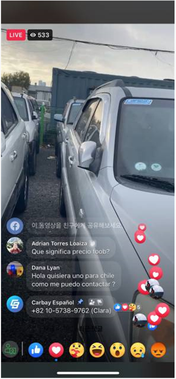

Carbay Korea regularly broadcasts real-time live streams through Facebook for sales promotion
We sell popular car models in real time through a live stream.
It actually shows the condition of the vehicle through a live stream at a discounted price
The live stream is conducted regularly, and the broadcast date and time are announced through a notice board 2-3 days before the broadcast.
A person in charge according to the language used in each target country is assigned, and popular car models are introduced at a discount from the uploaded price.
Buyer can inquire about car condition, price and shipment in real time through Carbay Korea's live stream.
In addition, Carbay Korea conducts an inspection of the vehicle to be broadcast before the live stream to determine whether the vehicle is in a suitable condition for sale. If the condition of the vehicle is not suitable for sale, the vehicle will not be featured in the livestream.

Inquiries from Chilean buyers who participated in the live stream
The person in charge answers all questions in real time, and the live stream service of Carbay Korea is the first in Korea and is receiving great attention from buyers.
Sales staff answering buyers' questions
Cavey Korea does not stop there, and various events are also broadcast through live streams.
On Christmas Day on December 24, 2021, various prizes and discount coupons were drawn for live stream participants.
Cavey Korea Christmas Event Live Stream
Carbay Korea's corporate philosophy is to sell trust first without hiding trust with customers as the top priority.
For that reason, the live stream, created to disclose everything transparently with confidence, is well received by buyers from all over the world.